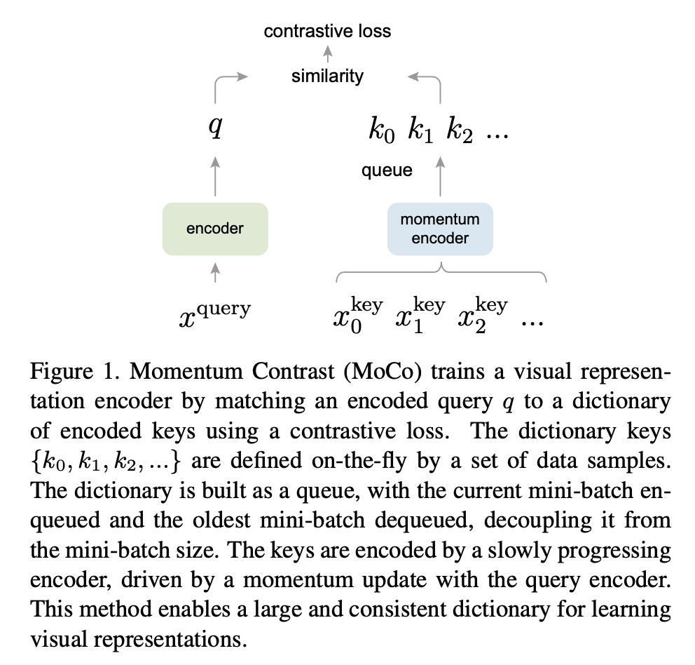

This article decribes a milestone in contrastive learning and the best paper Nominee in CVPR 2020.
Paper: He, K., Fan, H., Wu, Y., Xie, S., and Girshick, R. Momentum contrast for unsupervised visual representation learning. arXiv preprint arXiv:1911.05722, 2019. Updated version accessed at: https://arxiv.org/abs/1911.05722.
Bottleneck of past work
The requirement of huge batch size makes simCLR hard to land in real scenes. This paper proposes a framework called MoCo which can not only overcome feature consistency but also provide a large negative samples for training.
Model Framework

As usual, a CV paper can roughly understand what the paper wants to express through Figure 1.
A quick review of simCLR:

The only difference is that MoCo uses a momentum encoder instead of two same encoders.
Note: simCLR and MoCo are the same period work, and in MoCo V2, projector which is proposed by simCLR is used.
Queue to save negative samples
We have talked about the cons of InstDisc: inconsistency of negative samples since fast updating encoders; SimCLR: very large batch size to keep negative samples have consistent distribution with positive samples.
To overcome these bottlenecks, Moco wants to have a large dictionary to save negative samples, where these negative samples also are kept as consistent as possible despite its evolution. proposed to use a queue to save negative samples by using queue’s FIFO(first in first out) characteristic. Then, a queue with much larger size than batch size is used and you can use small batch size to train networks.
The queue size is recommended as 65536. And after each batch, the earliest negative samples with batch size(n) in the queue will be deleted, and the latest n negative samples will be added to the queue to keep the queue updated.
So far, this queue seems to be like memory bank in InstDisc. And how negative samples in this queue can have same consistency will be discussed in next chapter: a momentum encoder.
Momentum encoder
A momentum encoder is like:
\[\theta_{\mathrm{k}} \leftarrow m \theta_{\mathrm{k}}+(1-m) \theta_{\mathrm{q}}\]
where \(\theta_{\mathrm{k}}\) is momentum encoder, \(\theta_{\mathrm{q}}\) is the encoder updated by back-propagation. \(m\) always equals 0.999. Hence, the momentum encoder is updated very slowly and ensure that the negative samples from \(\theta_{\mathrm{k}}\) are kept consistency.
Loss Function
\[\mathcal{L}_{q}=-\log \frac{\exp \left(q \cdot k_{+} / \tau\right)}{\sum_{i=0}^{K} \exp \left(q \cdot k_{i} / \tau\right)}\]
Moco proposed infoNCE loss and soon become the mainstream loss in contrastive learning. The only difference between NCE loss and infoNCE loss is that infoNCE only uses K negative samples from instead of all negative samples.
Conclusion
Moco achieves 68.6% accuracy by linear classification protocol on ImageNet. Compared with 54% in InstDice, Moco can be regarded as a milestone work in contrastive learning.